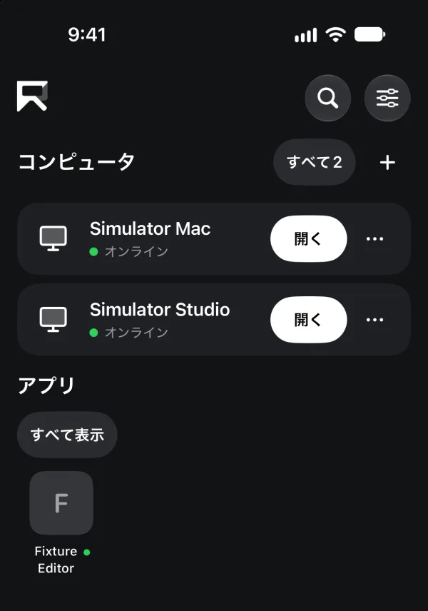
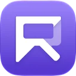

Desktop — Mac の画面をそのまま
Mac のデスクトップ全体を表示して操作します。拡大して細かい部分を見ることもできます。
iPhone・iPad 用リモートデスクトップ
Remones は、iPhone や iPad から自分の Mac を操作するアプリです。画面を見るだけでなく、キーボードやトラックパッドを使って、Mac のアプリでそのまま作業できます。
iOS / iPadOS 18 以降に対応。操作する Mac（macOS 15 以降）には、Mac アプリ「Remones Host」を入れて使います。

画面全体を映すだけのリモートデスクトップではありません。アプリやウインドウ単位で開いて、小さな画面でも作業しやすくしています。
Mac のデスクトップ全体を表示して操作します。拡大して細かい部分を見ることもできます。
Mac のアプリをひとつ選ぶと、そのウインドウを iPhone や iPad の画面サイズに合わせて表示します。文字の大きさも調整できます。
自宅の Mac も仕事の Mac も、Home に並べて切り替えられます。一度接続した Mac のアプリは、Mac がオフラインのときも Home に残ります。
開いているウインドウ、アプリ、ほかの Mac をシェルフにまとめて表示します。作業中の画面から、別のウインドウへすぐ移れます。
キーボードとトラックパッド操作に対応。iPhone でコピーしたテキストは、セッションメニューの Input から Mac にペーストできます。
Mac の音声を iPhone で再生できます。ピクチャ・イン・ピクチャを使えば、ほかのアプリを使いながら Mac の画面を確認できます。
ウインドウ、アプリ、ワークスペース、コンピュータを検索。Mac 側で許可すると、Mac 内のファイル名も検索できます。
Tailscale などの VPN を使えば、自宅の外からも同じように接続できます。使い方を見る
はじめて接続するときは、iPhone と Mac に表示されるコードを照らし合わせて、Mac で承認します。通信は暗号化されます。
iPhone と iPad のライトモード・ダークモードに合わせて表示が切り替わります。このページも同じです。


画面は開発中のビルドをシミュレーターで撮影したものです。製品版では変わる場合があります。
Remones には、開発者が運営する中継サーバーやアカウントがありません。iPhone と Mac は直接つながります。
接続はローカルネットワーク、またはあなたが用意した VPN を通ります。画面・音声・入力が Remones のサーバーを経由することはありません。
Remones 独自のアカウント登録はありません。メールアドレスも求めません。
初回は両方の画面に出る 6 桁のコードを確かめ、Mac で承認します。通信は TLS で暗号化されます。
広告や第三者の利用解析 SDK は組み込んでいません。ログも自動では送信しません。
Remones Plus は、アプリアイコンとアプリ内のアクセントカラーを選べるサブスクリプションです。標準とレモンは無料で使えます。

Remones Plus は任意です。価格や無料体験の条件は、App Store とアプリ内の購入画面に表示されます。
操作したい Mac に「Remones Host」をインストールします。
Mac アプリについて画面を映すための「画面収録」と、操作のための「アクセシビリティ」を許可します。
権限についてRemones で Mac を選び、表示されたコードを確かめて Mac で承認します。
セットアップガイドRemones 本体です。Mac を探して接続し、操作します。
操作される側の Mac に入れるアプリです。iPhone・iPad からの接続を受け付け、画面と音声を送ります。